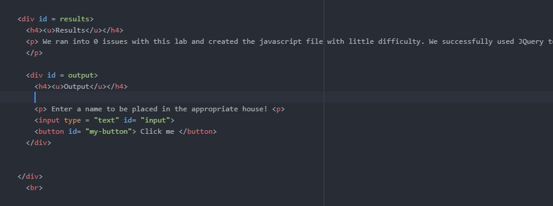
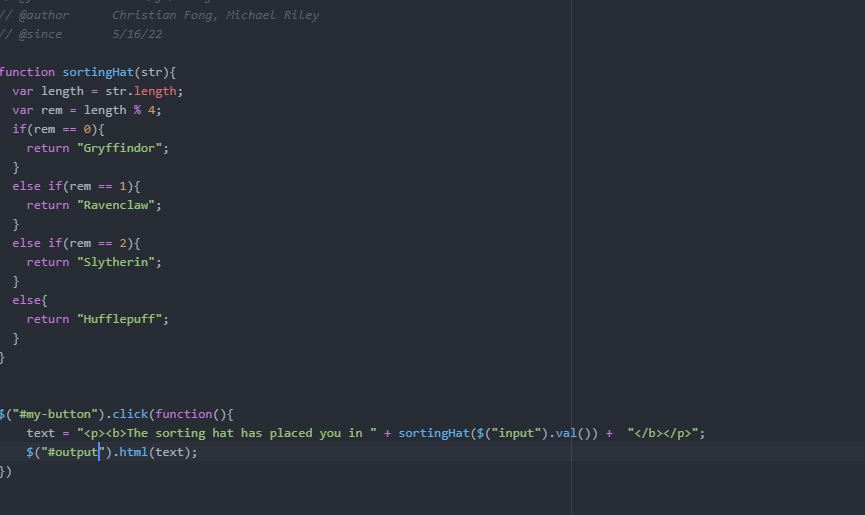
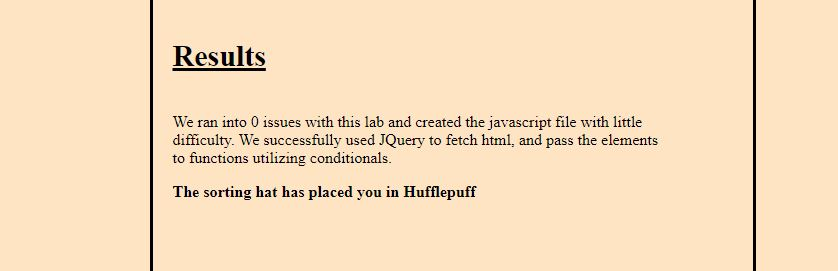

Challenge
This lab involved debugging old labs we submitted in the past.
Problems
We debugged our old lab 12, in which we worked with loops and wrote a sorting hat function. Our bug involved the way the function result was outputted to our html page. Rather than printing the result under the output heading, it would replace it as a whole. We found the issue to be that we used Jquery to change the inner html of the output div as whole, which itself included the heading. To fix this, we created a sub div within our output div, and placed our function output in that div's inner html.
Results
We ran into 0 issues with this lab and debugged our old lab perfectly.
Debugging
  Our original code from Lab 12, and its output to its index.html.
Our revised and debugged code from Lab 12, and its new method of outputting to its index.html